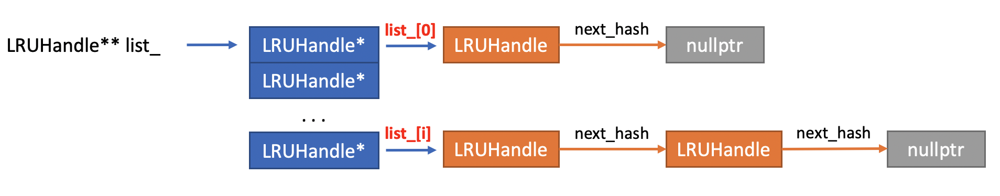
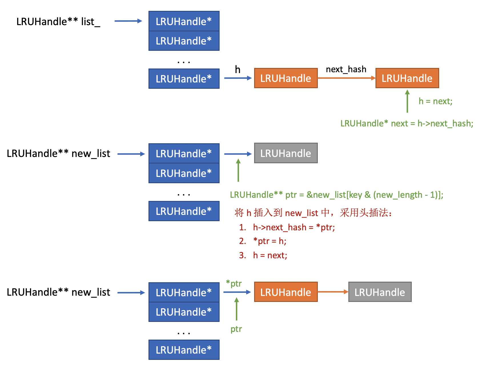
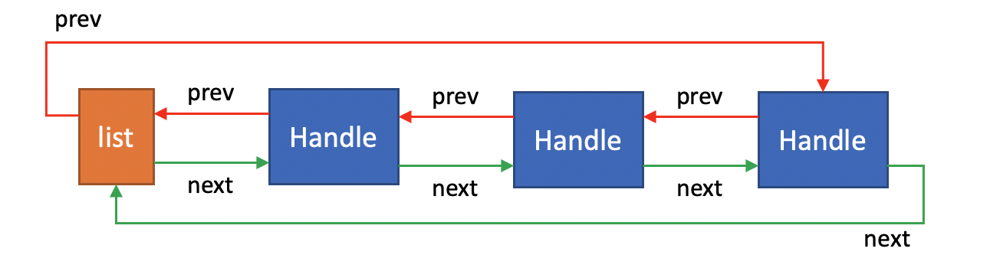

缓存可以更快的响应数据的请求，提高软件的运行效率，是一个很重要的概念。由于内存是有限的，我们不能将所有数据都进行缓存，只能缓存部分数据，也就意味着我们需要对缓存中的数据进行替换。最近最少使用（Least Recently Used, LRU）是使用最多的替换方法，无论是在操作系统层面，还是工程应用中。LevelDB的Cache缓存也采用了LRU方法，并且进行了性能优化，支持多线程操作，以及每个数据条目都有生命周期管理。
1. 思路总览
LeetCode中的LRU题目的解法是采用哈希表（unordered_map）和一个双向链表，哈希表解决索引问题，双向链表维护访问顺序。LevelDB的思想是一样的，但是对哈希表和双向链表都进行了优化。LevelDB自己实现了一个哈希表（采用开链法解决冲突），使用两个双向链表保存数据，其中所有正在被客户端使用的数据条目都存在 in-use 链表中，这些数据是无序的，因为他们不会被淘汰。而所有已经不再为客户端使用的条目都放在 lru 链表中，该链表是有序的，表头的元素是最近最少使用的（需要被淘汰的数据），表尾的元素是最新被使用过的元素。
2. LRUHanle
1 | struct LRUHandle { |
LRUCache中最基本的数据单元，
- 其中Key为Slice类（Google常用的一个对string的封装）
- Value是一个void*指针，所以支持任何类型的数据
- 但也因为它是一个指针，LRUCache要负责管理其资源，必须传入明确的delete函数来释放对应的资源
- refs表示有多少个线程在使用当前数据项，如果有2个线程，它的值就为3（包括Cache自身对其的引用）
- 因为Key是变长的，如果定义
char key_data[100]就会造成空间的浪费。但是使用char* key_data，还需要在调用key_data = malloc()，这样LRUHandle与Key的空间也会不连续。LevelDB采用一个占位符的形式来实现，key_data保存key的起始地址，我们在为LRUHandle申请空间的时候，只需要申请sizeof(LRUHandle) - 1 + key.size()大小即可，其中的-1减去的是char key_data[1]的大小
1 | LRUHandle* e = reinterpret_cast<LRUHandle*>(malloc(sizeof(LRUHandle) - 1 + key.size())); |
3. HandleTable
LevelDB实现的HashTable，比内置的HashTable速度快大约5%，并且内部实现逻辑比较简单，维护了一个LRUHandle的链表，并采用拉链法来解决hash冲突。其主要变量为：
1 | uint32_t length_; // hash链表长度 |

3.1. FindPointer
LevelDB的哈希表实现中，最优雅的写法就是用了二维指针，将链表的插入、修改、删除操作变得十分简单。FindPointer作为一个辅助函数，其功能就是找到对应Key的LRUHandle并且返回一个指向该LRUHandle的指针的指针，这里一定要明白这个指针的指针，如果有疑问，根据上面的图片，自己模拟下寻找的过程，就能更好的理解了。
1 | LRUHandle** FindPointer(const Slice& key, uint32_t hash) { |
另外，这里与一个小技巧，当哈希表的大小时\(2^n\)时，hash & (length_ -1) 相当于 hash % length_ ，并且速度要更快。
3.2. Resize
对于一个哈希表，在扩容的时候有两个常见的选择：1）选用一个素数，这样可以保证最小的冲突；2）使用 \(2^n\) ，这样可以使用 hash & (length_ -1) 优化。LevelDB采用的就是后者，在Resize的时候，遍历原有的所有元素，重新哈希到对应的桶内，如果遇到冲突，采用头插法插入到对应桶的链表中。
1 | void Resize() { |

3.3. Insert
1 | LRUHandle* Insert(LRUHandle* h) { |
调用FindPointer函数找到对应的位置，如果存在相同的Key/Hash，则将old替换为h，并且返回old。调用者释放不是nullptr的old元素。
3.4. Remove
1 | LRUHandle* Remove(const Slice& key, uint32_t hash) { |
在双指针的情况下，删除操作的核心其实只有一行代码：*ptr = result->next_hash;
3.5. Lookup
1 | LRUHandle* Lookup(const Slice& key, uint32_t hash) { |
查找操作也很简单，调用FindPointer找到对应的位置即可。
4. LRUCache
LevelDB实现的LRUCache采用了两个双向链表（LRUHandle）加一个哈希表（HandleTable），两个双向链表将整个缓存分成两个不相交的集合：
- in_use链表：保存所有正在被客户端使用的数据
- lru链表：保存所有已经不被客户端使用的数据
为了更好的理解代码是如何实现的，我们先看一下Cache中的几个辅助函数：
4.1. 辅助函数
LevelDB中的双向链表都存在一个哨兵节点（在函数中为list），该节点本身步存储数据，其next指针指向最旧的Handle，prev指针指向最近被访问过的Handle。

- 哨兵节点的prev指向了最后一个数据项
- 最后一个数据项的next指向哨兵节点
1 | void LRUCache::LRU_Append(LRUHandle* list, LRUHandle* e) { |
上面我们提到了一个数据项e，只可能存在于 in_use 或 lru 中的一个，所以Remove的时候不需要传入list参数。
1 | void LRUCache::LRU_Remove(LRUHandle* e) { |
我们在改变数据项e的引用数量refs时，要注意两种情况：
- 数据e的引用次数加一，但是之前没有被客户端使用，我们需要将其从 lru 链表中删除，添加到 in_use 链表中
- 数据e的引用次数减一，减少后没有客户端使用，我们需要将其从 in_use 链表中删除，添加到 lru 链表中
1 | void LRUCache::Ref(LRUHandle* e) { |
当我们插入一个相同Key的数据项时，需要将老的数据项从Cache中删除。但是，在多线程的环境下，我们还不能直接将其释放，因为可能其他的线程还持有该数据项的Handle。为了解决这个问题，LevelDB为每一个数据项设置了一个 in_cache 的参数，当我们要删除一个数据项时，删除函数需要做的就是：
- 将该数据项从链表中移除（LRU_Remove）
- 将 in_cache 置位 false
- 释放引用（Unref）
1 | bool LRUCache::FinishErase(LRUHandle* e) { |
假设只有一个客户端在操作数据项e，那么refs为2。调用 FinishErase 后，refs 变为了1。此时，客户端仍然需要调用 Release 函数释放它所拥有的Handle，refs变为0之后，对应的数据项e才被真正的释放掉。
4.2. 公共接口
a. Insert
- 加锁（支持多线程）
- 根据参数信息构造一个数据项LRUHandle
- 将数据项插入in_use链表
- 将数据项插入哈希表中，如果哈希表中存在相同的Key，则需要删除老的数据项
- 如果当前容量不足，则循环删除旧数据
- 返回数据项的Handle指针
b. Lookup
- 加锁（支持多线程）
- 调用哈希表的Lookup函数，看数据是否存在Cache中
- 如果存在，则调用Ref函数
- 返回数据项的Handle指针
1 | Cache::Handle* LRUCache::Lookup(const Slice& key, uint32_t hash) { |
c. Release
对应数据项的索引减一
1 | void LRUCache::Release(Cache::Handle* handle) { |
d. Erase
将数据项从哈希表中删除，并且将数据项移出Cache
1 | void LRUCache::Erase(const Slice& key, uint32_t hash) { |
e. Prune
遍历lru链表，将所有ref为1的数据项释放掉，即清楚所有的未使用缓存。
参考该函数，我们也可以为每一个数据项添加一个时间，定时去清理所有到期的缓存
1 | void LRUCache::Prune() { |
5. ShardedLRUCache
LRUCache的所有接口都会加锁，为了更少的锁持有时间以及更高的缓存命中率，LevelDB定义了多个LRUCache，分别处理不同hash取模后的缓存处理。LevelDB的内部采用了16个LRUCache，然后根据key的前四bits来选则不同的LRUCache
参考内容
- leveldb 的缓存结构
- leveldb笔记之11:LRUCache的实现 - Ying's Blog
- 【深入浅出leveldb】LRU与哈希表 - 云+社区 - 腾讯云
- 一个线程安全的 lrucache 实现 --- 读 leveldb 源码 - SegmentFault 思否
- Leveldb1.2 source code analysis -- general module (Cache) - XiaoLong's Blog | XiaoLong's Blog
- leveldb 笔记五：LRUCache的实现 - Kaiyuan's Blog | May the force be with me
- 漫谈 LevelDB 数据结构（三）：LRU 缓存（ LRUCache） - 知乎
- LevelDB源码解析29. 哈希表的实现 - 知乎